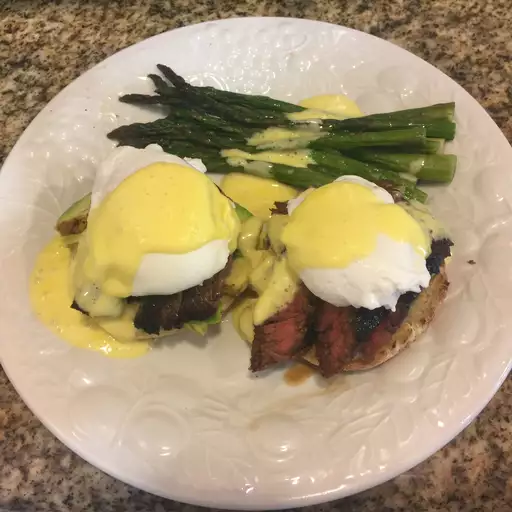

Hollandaise Sauce

Description
This is a recipe for hollandaise!
Ingredients
- Egg yolks: This creamy Hollandaise recipe starts with three egg yolks.
- Lemon juice: A tablespoon of lemon juice adds lots of freshness and brightness.
- Dijon mustard: Dijon mustard lends a sharp and tangy flavor.
- Hot sauce: Use a dash (or more) of your favorite hot pepper sauce.
- Butter: Rich, velvety Hollandaise requires a whole stick of butter.
Steps
- Blend the first four ingredients.
- Melt the butter in the microwave.
- Turn on the blender and pour in the butter
Return home